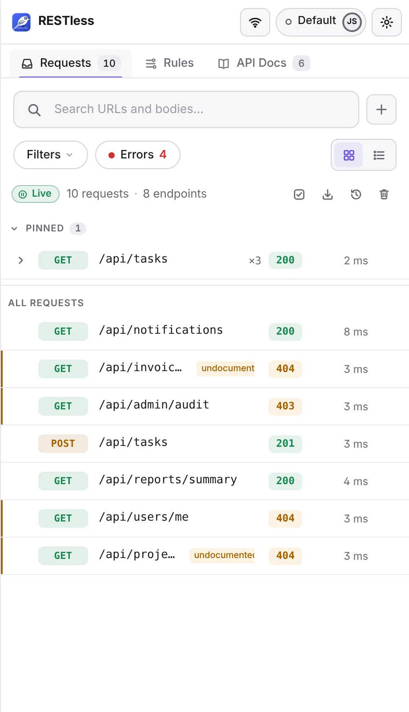
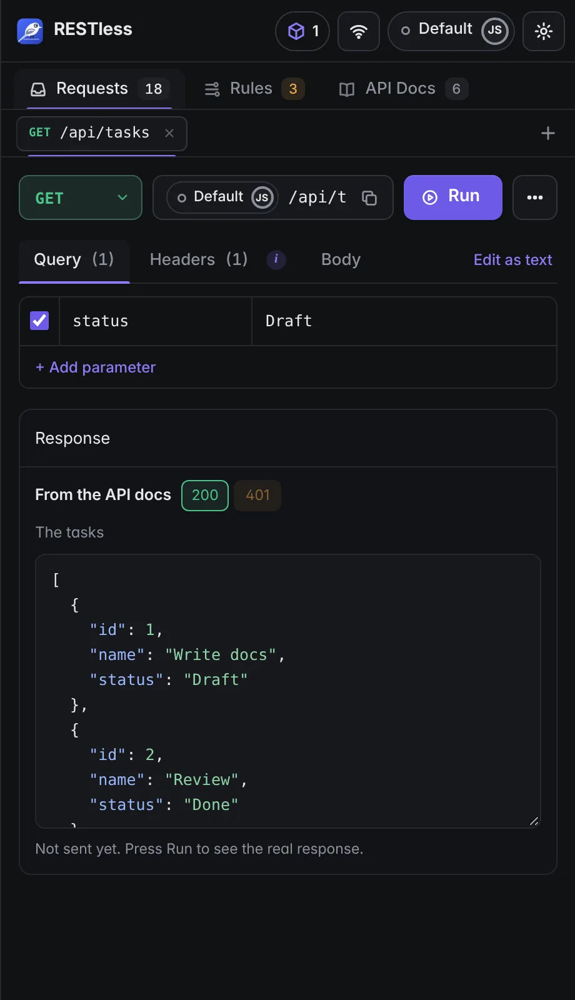
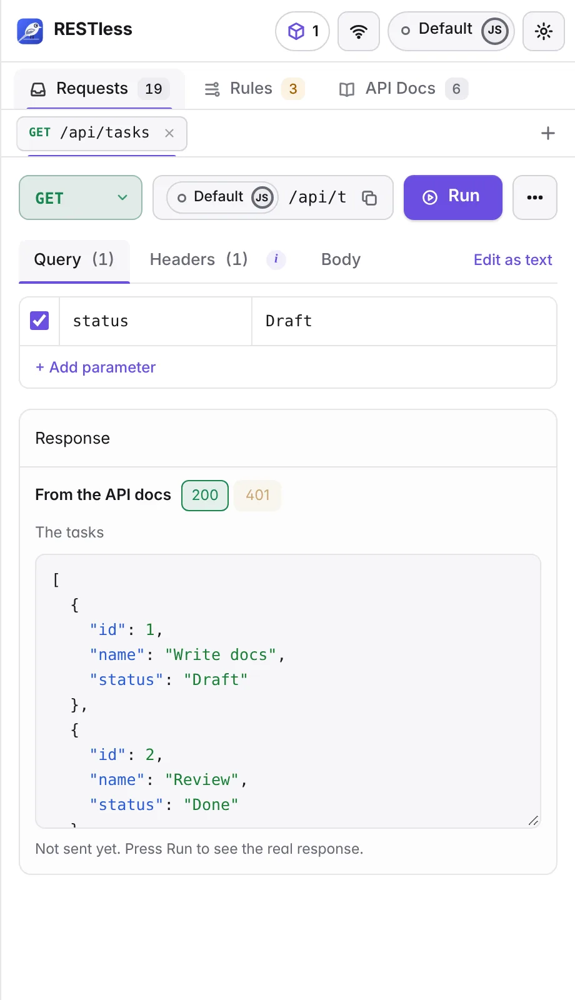

Requests
Every API call your app makes, grouped by endpoint.




Find a call
- Search looks in URLs and bodies.
- Filters narrow the list to methods, errors, slow or large calls.
- Click a row to open it. Rows with several calls expand.
Keep what matters
- Pin an endpoint to keep it at the top: hover the row and click the pin. Click it again to unpin.
- ⋯ above the list has Select… (hide, show or export several), Export… and Keep after reload (keeps calls when the page reloads; a dot on ⋯ shows it's on). The bin next to it clears the list.
- Select (the checkbox icon above the list) to pause or resume capturing several endpoints at once, or export them.
- Middle-click a request to open it in a new tab and stay on the list.
- Open request tabs come back after a reload, with your edits.
Read the tags
| Tag | Means |
|---|---|
| Changed | RESTless changed this call: a rule rewrote it, a mock answered, or you simulated the response. Hover to see which. |
| Offline | The call failed because the tab is offline. |
| yours | A request you made, not the app. |